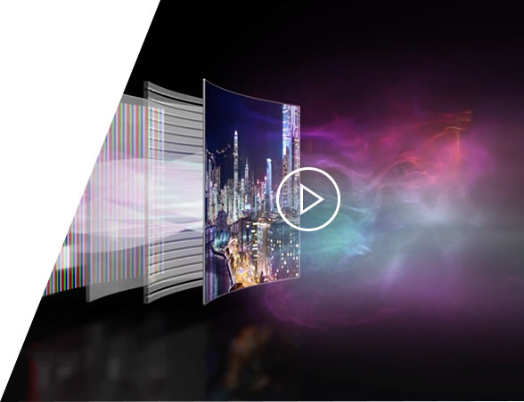
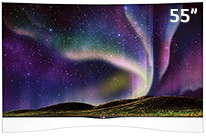
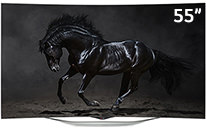

Самоизлучающие пиксели
Собственная независимая подсветка каждого пикселя
Собственная независимая подсветка каждого пикселя
Идеальная четкость
33 000 000 цветовых субпикселей в 4К OLED
33 000 000 цветовых субпикселей в 4К OLED
Улучшенная цветопередача
благодаря технологии WRGB OLED
благодаря технологии WRGB OLED
Высокая контрастность
в 5 раз выше, чем
в LCD дисплее
в 5 раз выше, чем
в LCD дисплее
Быстрый отклик
до 150 раз выше
чем LED
до 150 раз выше
чем LED

Самоизлучающие пиксели
Матрица OLED-телевизора, в отличие от LED LCD, состоит из миллионов самоизлучающих пикселей. Каждый из них контролируется индивидуально, и нет никаких проблем с тем, чтобы показать предельное сочетание ярких, насыщенных красок и бездонно глубокого черного цвета. Таким образом, OLED-телевизор достигает поистине ультимативный контраст, приближая изображение к реальности.
33 миллиона субпикселей
Технология LG OLED использует уникальную структуру субпикселей WRGB, где к основным цветам (красный, зеленый и синий) добавлен белый субпиксель
Это позволяет достичь нового уровня яркости и чистоты цветов, одновременно снижая энергопотребление и продлевая ресурс панели. Новый формат ULTRA HD 4K подразумевает разрешение в 4 раза выше Full HD, так что на телевизорах 4K OLED к вашим услугам целых 33 миллиона субпикселей, из которых складывается самое четкое и захватывающее изображение на сегодняшний день.
Безупречные цвета
OLED-телевизор демонстрирует весьма чистые и глубокие оттенки цветов, превосходящие зауженный спектр типичного телевизора LED LCD. Новые краски придают больше эмоций, любое изображение по-настоящему оживает на OLED-телевизоре.
Бесконечная контрастность изображения
Самоизлучающие пиксели OLED способны полностью выключаться там, где нужно показать максимально глубокий черный цвет. При этом точное 10-битное управление позволяет прорисовать мельчайшие детали в тенях, а в сочетании с яркими пикселями достигается безграничная контрастность.
Абсолютная четкость динамичных сцен
Время отклика OLED на порядки опережает LED LCD, поэтому можно забыть про характерные искажения в движении. Отныне вы можете насладиться кристально четким изображением в динамичных сюжетах, по-настоящему погружаясь в гущу событий.
Изогнутый экран
Изогнутый экран - это не только причудливый элемент дизайна. Изображение на изогнутом телевизоре обволакивает зрителя и обеспечивает оптимальное удаление как в центре, так и по краям экрана, что снижает визуальные искажения. Это позволяет достичь полного эффекта погружения, словно изображение стало реальностью.
Широкие возможности webOS
WebOS содержит сотни приложений, тысячи фильмов и дает доступ к другому контенту. Дружелюбный интерфейс webOS будет понятен даже новичкам без опыта использования Smart TV. Многозадачный режим позволяет работать одновременно с несколькими приложениями, раскрывая и сворачивая их по мере надобности.
А чтобы не потеряться в общем изобилии, к вашим услугам есть специальный сервис, подбирающий рекомендованный контент из интернета и локальных ресурсов.
Пульт Magic Remote
Пульт Magic Remote – невероятно простой и удобный способ управления всеми возможностями webOS. По своей интуитивности он может поспорить с компьютерной мышкой. Встроенный микрофон для голосовых команд и дополнительные кнопки с цифрами позволяют с легкостью заменить кнопочный пульт.
Универсальный пульт
Можно использовать ваш пульт от телевизора еще и для других устройств, например внешней аудиoсистемы, BluRay-проигрывателя или даже спутникового ресивера. Один пульт для всех устройств —максимальное удобство.
Голосовое управление
В Magic Remote встроен микрофон. Вы можете давать телевизору голосовые команды
или же вместо утомительного набора текста просто надиктовать его.
Для моделей со встроенным микрофоном можете давать команды телевизору
прямо с дивана.
Меню
Нажмите эту кнопку, чтобы увидеть ваши приложения и сервисы Smart TV.
Колесико
Для максимального удобства в пульт добавлено колесико для прокрутки между экранами в интернет-браузере или в приложениях.
Наведи-и-Кликни
Использовать Magic Remote так же просто, как и обычную компьютерную мышку. Наведите
курсор и кликните.
Выберите свой
OLED телевизор

Модель 2014 года! OLED телевизор с уникальным дизайном, поддержкой 3D и Smart TV
55EA970V

Новый изогнутый OLED-телевизор с Cinema 3D и новым поколением Smart TV на платформе webOS
55EC930V